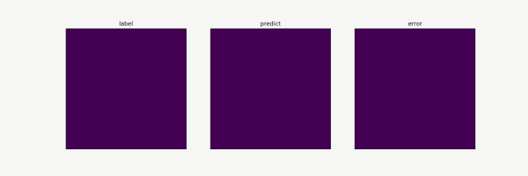

AI Electromagnetic Simulation based on Point Cloud Method

Overview
This tutorial describes the deep learning electromagnetic simulation method based on point cloud data, helping you quickly use MindSpore Elec.
Conventional electromagnetic simulation usually uses finite element or finite-difference methods to compute electromagnetic fields. These methods require complex mesh division and iterative computation, which is time-consuming and affects product R&D efficiency. MindSpore Elec provides a new end-to-end electromagnetic field AI computation method. This method directly computes the electromagnetic field in the simulation area based on point cloud data without mesh division and iterative solution, greatly accelerating the overall simulation speed and facilitating efficient product R&D.
This current sample is for Ascend 910 AI processor. You can find the complete executable code at https://gitee.com/mindspore/mindscience/tree/master/MindElec/examples/data_driven/pointcloud
Overall Process
The overall process of electromagnetic simulation based on point cloud data is as follows:
Export the geometric/material information from a CST file.
Generate the point cloud data.
Compress the data.
Electromagnetic simulation.
Exporting the Geometric/Material Information from a CST File
MindSpore Elec provides two types of automatic execution scripts for converting CST files into STP files that can be read by Python. The scripts can be used to convert data in batches to implement large-scale electromagnetic simulation.
The CST VBA API automatically calls and exports the JSON and STP files: Open the VBA Macros Editor of the CST software, import the
export_stp.basfile in thegenerate_pointclouddirectory, change the paths of the JSON and STP files to the desired ones, and clickRunto export the JSON and STP files. The JSON file contains the model port location and the material information corresponding to the STP file.For CST 2019 or later, you can use Python to directly call CST: Directly call the
export_stp.pyfile in thegenerate_pointclouddirectory.
Example
python export_stp.py --cst_path CST_PATH
--stp_path STP_PATH
--json_path JSON_PATH
In the preceding command, cst_path specifies the path of the CST file to be exported as the STP file, and stp_path and json_path specify the paths for storing the exported STP and JSON files, respectively.
Generating the Point Cloud Data
The STP file cannot be directly used as the input of the neural network. It needs to be converted into regular tensor data. MindSpore Elec provides an API for efficiently converting the STP file into the point cloud tensor data. The generate_cloud_point.py file in the generate_pointcloud directory provides the API calling example.
When using this module, stp_path and json_path can be configured to specify the paths of the STP and JSON files used to generate the point cloud. material_dir specifies the path of the material information corresponding to the STP. The material information is directly exported from the CST software. sample_nums specifies the number of point cloud data records generated from the x, y, and z dimensions. bbox_args specifies the region where the point cloud data is generated, that is, (x_min, y_min, z_min, x_max, y_max, z_max).
The following is an example:
python generate_cloud_point.py --stp_path STP_PATH
--json_path JSON_PATH
--material_dir MATERIAL_DIR
--sample_nums (500, 2000, 80)
--bbox_args (-40., -80., -5., 40., 80., 5.)
Data compression
If the point cloud resolution is set to a high value, the memory and computing consumption for subsequent processing of a single piece of point cloud data may be too high. Therefore, MindSpore Elec provides the data compression function. You can call the script in the data_compression directory to compress the original point cloud data, reducing the memory and computing consumption of subsequent processes. The compression process is divided into the following two steps:
If you use the model for the first time, call
train.pyto train a compressing model. If compressing model checkpoints exist, skip this step.After model training is complete, call
data_compress.pyto compress data.
(Optional) Compressing Model Training
Preparing the Training Data
The training data used by the compressing model is the blocks of point cloud data. After the point cloud data is generated, the generate_data function in data_compression/src/dataset.py can be called to generate the data required for training and inference. The block size and data input and output paths are configured using the following parameters in the script:
PATCH_DIM = [25, 50, 25]
NUM_SAMPLE = 10000
INPUT_PATH = ""
DATA_CONFIG_PATH = "./data_config.npy"
SAVE_DATA_PATH = "./"
During the preparation and generation of training data, data is normalized. To ensure the validity of the model, the same normalization parameters need to be used during inference and compression. These parameters are saved in the data_config.npy file.
Building a compressing model
Build a compressing model by referring to data_compression/src/model.py. The model is trained in self-supervised learning mode. The model consists of an encoder and a decoder. During the training, the network needs to rebuild data (decoding=True). When the compressed data is inferred, the decompressor is omitted (decoding=False).
For different data block sizes, you need to modify some code of the encoder accordingly to ensure that the output space size of the encoder is [1,1,1].
class EncoderDecoder(nn.Cell):
def __init__(self, input_dim, target_shape, base_channels=8, decoding=False):
super(EncoderDecoder, self).__init__()
self.decoding = decoding
self.encoder = Encoder(input_dim, base_channels)
if self.decoding:
self.decoder = Decoder(input_dim, target_shape, base_channels)
def construct(self, x):
encoding = self.encoder(x)
if self.decoding:
output = self.decoder(encoding)
else:
output = encoding
return output
class Encoder(nn.Cell):
...
class Decoder(nn.Cell):
...
Model Training
During compressing model training, initialize EncoderDecoder based on parameters defined in config.py, such as the number of input features, data block size, and number of basic features.
model_net = EncoderDecoder(config["input_channels"], config["patch_shape"], config["base_channels"], ecoding=True)
Then, call the MindSpore Elec data API to read a dataset. This API can automatically shuffle data and batch data.
train_dataset = create_dataset(input_path=opt.train_input_path,
label_path=opt.train_input_path,
batch_size=config["batch_size"],
shuffle=True)
eval_dataset ...
In order to improve model precision, set the learning rate decay policy.
milestones, learning_rates = step_lr_generator(step_size,
config["epochs"],
config["lr"],
config["lr_decay_milestones"])
Then, call the training API Solver of MindSpore Elec to set training parameters, including the optimizer, metrics, and loss function.
solver = Solver(model_net,
train_input_map={'train': ['train_input_data']},
test_input_map={'test': ['test_input_data']},
optimizer=optimizer,
metrics={'evl_mrc': evl_error_mrc,},
amp_level="O2",
loss_fn=loss_net)
Finally, use Solver.model.train and Solver.model.eval to train and test the compressing model and periodically store the checkpoints of the compressing model.
for epoch in range(config["epochs"] // config["eval_interval"]):
solver.model.train(config["eval_interval"],
train_dataset,
callbacks=[LossMonitor(), TimeMonitor()],
dataset_sink_mode=True)
res_test = solver.model.eval(eval_dataset, dataset_sink_mode=True)
error_mean_l1_error = res_test['evl_mrc']['mean_l1_error']
save_checkpoint(model_net, os.path.join(opt.checkpoint_dir, 'model_last.ckpt'))
Compressing the data
During data compression, you need to set the original point cloud path and the model checkpoint file, define the compressing model based on parameters defined in config.py, and import the model checkpoint.
encoder = EncoderDecoder(config["input_channels"], config["patch_shape"], decoding=False)
load_checkpoint(opt.model_path, encoder)
The data compression script automatically divides the cloud data into data blocks that adapt to the compressing model and uses data_config.npy generated during training data preparation to normalize the data. After the division is complete, MindSpore inference is automatically called to compress the data. After the compression, the data block encoding result is rearranged based on the original block space position to obtain the final compression result.
Electromagnetic Simulation
After the point cloud data is prepared, the electromagnetic simulation models in the full_em and S_parameter directory of MindSpore Elec can be called to implement full electromagnetic and S-parameters simulation. Each simulation process can be divided into two steps:
Use
train.pyto train the simulation model.After the model training is completed, use
eval.pyto compute the full electromagnetic or S-parameters simulation.
Full Electromagnetic Simulation
Building a Full Electromagnetic Simulation Model
First, build an electromagnetic simulation model by referring to full_em/src/maxwell_model.py, and train the model in supervised learning mode. The model is divided into two parts: feature extraction and electromagnetic field computation.
class Maxwell3D(nn.Cell):
"""maxwell3d"""
def __init__(self, output_dim):
super(Maxwell3D, self).__init__()
self.output_dim = output_dim
width = 64
self.net0 = ModelHead(4, width)
self.net1 = ModelHead(4, width)
self.net2 = ModelHead(4, width)
self.net3 = ModelHead(4, width)
self.net4 = ModelHead(4, width)
self.fc0 = nn.Dense(width+33, 128)
self.net = ModelOut(128, output_dim, (2, 2, 1), (2, 2, 1))
self.cat = P.Concat(axis=-1)
def construct(self, x):
"""forward"""
x_location = x[..., :4]
x_media = x[..., 4:]
out1 = self.net0(x_location)
out2 = self.net1(2*x_location)
out3 = self.net2(4*x_location)
out4 = self.net3(8*x_location)
out5 = self.net4(16.0*x_location)
out = out1 + out2 + out3 + out4 + out5
out = self.cat((out, x_media))
out = self.fc0(out)
out = self.net(out)
return out
class ModelHead(nn.Cell):
...
Model Training
During the training process of the electromagnetic simulation model, the prediction model is initialized using Maxwell3D. The network output is six dimensions, as shown below:
model_net = Maxwell3D(6)
Then, call the create_dataset function in src/dataset to load dataset. This function is implemented using the dataset utilities of MindSpore Elec and can automatically shuffle data and batch data.
dataset, _ = create_dataset(opt.data_path, batch_size=config.batch_size, shuffle=True)
Set the learning rate decay policy.
lr = get_lr(config.lr, step_size, config.epochs)
Then, call the training API Solver of MindSpore Elec to set training parameters, including the optimizer, metrics, and loss function.
solver = Solver(model_net,
optimizer=optimizer,
loss_scale_manager=loss_scale,
amp_level="O2",
keep_batchnorm_fp32=False,
loss_fn=loss_net)
Finally, use Solver.model.train and Solver.model.eval to train and test the model and periodically save the model checkpoint files.
ckpt_config = CheckpointConfig(save_checkpoint_steps=config["save_checkpoint_epochs"] * step_size,
keep_checkpoint_max=config["keep_checkpoint_max"])
ckpt_cb = ModelCheckpoint(prefix='Maxwell3d', directory=opt.checkpoint_dir, config=ckpt_config)
solver.model.train(config.epochs, dataset, callbacks=[LossMonitor(), TimeMonitor(), ckpt_cb],
dataset_sink_mode=False)
Model Inference
Set the path of the inference input data and model checkpoint file, define the model based on parameters defined in config.py, and import the model checkpoint.
model_net = Maxwell3D(6)
param_dict = load_checkpoint(opt.checkpoint_path)
The MindSpore Elec inference API can be called to implement automatic inference.
solver = Solver(model_net, optimizer=optimizer, loss_fn=loss_net, metrics={"evl_mrc": evl_error_mrc})
res = solver.model.eval(dataset, dataset_sink_mode=False)
l2_s11 = res['evl_mrc']['l2_error']
print('test_res:', f'l2_error: {l2_s11:.10f} ')
Take the electromagnetic simulation of a mobile phone as an example. The following figure shows the electromagnetic field distribution and changes computed through this process.

S-parameters Simulation
Building a S-parameters Simulation Model
First, build S-parameters simulation model by referring to S_parameter/src/model.py, and the model is also trained through supervised learning, which is divided into two parts: feature extraction and S-parameter calculation.
class S11Predictor(nn.Cell):
"""S11Predictor architecture for MindSpore Elec"""
def __init__(self, input_dim):
super(S11Predictor, self).__init__()
self.conv1 = nn.Conv3d(input_dim, 512, kernel_size=(3, 3, 1))
self.conv2 = nn.Conv3d(512, 512, kernel_size=(3, 3, 1))
self.conv3 = nn.Conv3d(512, 512, kernel_size=(3, 3, 1))
self.conv4 = nn.Conv3d(512, 512, kernel_size=(2, 1, 3), pad_mode='pad', padding=0)
self.down1 = ops.MaxPool3D(kernel_size=(2, 3, 1), strides=(2, 3, 1))
self.down2 = ops.MaxPool3D(kernel_size=(2, 3, 1), strides=(2, 3, 1))
self.down3 = ops.MaxPool3D(kernel_size=(2, 3, 1), strides=(2, 3, 1))
self.down_1_1 = ops.MaxPool3D(kernel_size=(1, 13, 1), strides=(1, 13, 1))
self.down_1_2 = nn.MaxPool2d(kernel_size=(10, 3))
self.down_2 = nn.MaxPool2d((5, 4*3))
self.fc1 = nn.Dense(1536, 2048)
self.fc2 = nn.Dense(2048, 2048)
self.fc3 = nn.Dense(2048, 1001)
self.concat = ops.Concat(axis=1)
self.relu = nn.ReLU()
def construct(self, x):
"""forward"""
bs = x.shape[0]
x = self.conv1(x)
x = self.relu(x)
x = self.down1(x)
x_1 = self.down_1_1(x)
x_1 = self.down_1_2(x_1.view(bs, x_1.shape[1], x_1.shape[2], -1)).view((bs, -1))
x = self.conv2(x)
x = self.relu(x)
x = self.down2(x)
x_2 = self.down_2(x.view(bs, x.shape[1], x.shape[2], -1)).view((bs, -1))
x = self.conv3(x)
x = self.relu(x)
x = self.down3(x)
x = self.conv4(x)
x = self.relu(x).view((bs, -1))
x = self.concat([x, x_1, x_2])
x = self.relu(x).view(bs, -1)
x = self.relu(self.fc1(x))
x = self.relu(self.fc2(x))
x = self.fc3(x)
return x
Model Training
During the training process of the S-parameters simulation model, the prediction model is initialized using S11Predictor. The network input tensor channel dimension is configured in Config.py, as shown below:
model_net = S11Predictor(config["input_channels"])
Then, call the create_dataset function in src/dataset to load dataset.
dataset = create_dataset(input_path, label_path, config.batch_size, shuffle=True)
Set the learning rate decay policy.
milestones, learning_rates = step_lr_generator(step_size, epochs, lr, lr_decay_milestones)
Then, call the training API Solver of MindSpore Elec to set training parameters.
solver = Solver(model_net,
train_input_map={'train': ['train_input_data']},
test_input_map={'test': ['test_input_data']},
optimizer=optimizer,
amp_level="O2",
loss_fn=loss_net)
Finally, use Solver.model.train to train the model, and save the model checkpoint files after the training is completed.
solver.model.train(config["epochs"],
train_dataset,
callbacks=[LossMonitor(), TimeMonitor()],
dataset_sink_mode=True)
save_checkpoint(model_net, os.path.join(opt.checkpoint_dir, 'model_best.ckpt'))
Model Inference
Define the model based on parameters defined in config.py and import the model checkpoint file.
model_net = S11Predictor(input_dim=config["input_channels"])
load_checkpoint(opt.model_path, model_net)
Use solver.model.eval function to perform inference.
solver = Solver(network=model_net,
mode="Data",
optimizer=nn.Adam(model_net.trainable_params(), 0.001),
metrics={'eval_mrc': eval_error_mrc},
loss_fn=nn.MSELoss())
res_eval = solver.model.eval(valid_dataset=eval_dataset, dataset_sink_mode=True)
loss_mse, l2_s11 = res_eval["eval_mrc"]["loss_error"], res_eval["eval_mrc"]["l2_error"]
print('Loss_mse: ', loss_mse, ' L2_S11: ', l2_s11)
Take the mobile phone S-parameters as an example, the following figure shows S-parameters calculated through this process.